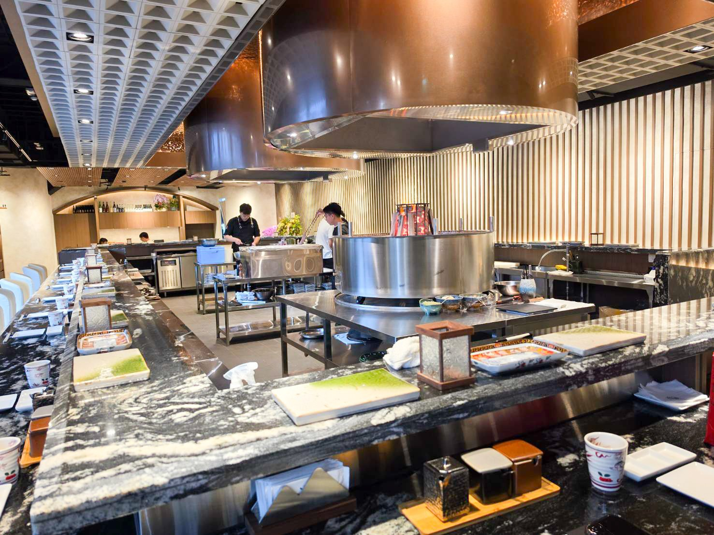

-

ル・フール
ル・フール 萊法小館（らいほうしょうかん）
★★★★★ 4.5 📍 台中市南区📅 2026 · フレンチ・コース・完全予約制「Le Four」はフランス語で「オーブン」を意味します。カナダ滞在経験を持つシェフのJames氏が手がける、オーブン料理が看板メニューです。
続きを読む → -

天楽里
天楽里氷室（てんらくりひょうしつ）
★★★★★ 4 📍 新竹県竹北市📅 2026 · 香港料理・茶餐廳・氷室・麺類・ご飯もの「天楽里氷室」は新竹の竹北にある香港式茶餐廳（カフェレストラン）です。オーナーは香港出身で、店名は香港の湾仔にある古い通り
続きを読む → -

セカンドフロアカフェ 台中ショウタイム文心店
セカンドフロア（弐楼）
★★★★★ 4 📍 台中市南屯区📅 2026 · ブランチ・イタリアン・アメリカ料理・カフェSecond Floor（貳樓）は2008年に誕生しました。台北の仁愛路にある古いアパートの2階から始まり、今では「オールデイ・ブランチ」が楽しめる名店として知られています。2024年にオープンした台中秀泰文心店は、「未来の都市森林」をコンセプトにした新店舗。中央公園や文心森林公園をイメージし、豊かな緑と鏡、ガラスを多用した、モダンでリラックスできる空間が広がっています。
続きを読む → -

みんなで開飯
開飯川食堂 文心店（カイファンチュアンショクドウ ウェンシンテン）
★★★★★ 4.5 📍 台中市南屯区📅 2026 · 四川料理・中華料理「開飯川食堂（KAIFUN Together）」は、老舗「福利川菜」の正統な四川の味を受け継ぎ、「シビれる辛さ（川麻加辣）」を看板に掲げる四川料理専門店です。鮮度、香り、シビれ、辛さの4つの要素を追求した本格的な味わいが楽しめます。文心店は秀泰生活台中文心店の6階に位置しており、映画鑑賞の後に外へ出ることなく、そのままお食事を楽しめる便利な立地も魅力です。
続きを読む → -

三田大河牧場 ハンバーグ
大河牧場 ハンバーグ専門店 南港環球店
★★★★★ 3.5 📍 台北市南港区📅 2026 · 洋食・ハンバーグ・定食「大河牧場 ハンバーグ専売（Mita Taiga Bokujo）」は、2023年に南港グローバルモール（Global Mall 南港）へ台湾1号店を出店した和風ハンバーグ専門店です。伝統的な日本の「手ごね」製法にこだわり、上質な牛肉を粗挽きと細挽きの絶妙なバランスで配合。一つひとつ丁寧に手作業で成形することで、肉の旨味と肉汁をぎゅっと閉じ込めています。シェフが開発した8種類の個性豊かなソースも魅力です。
続きを読む → -

チョイスミール 大里
厝秘（ツォーミー） 功夫菜・手路湯 大里店
★★★★★ 4.5 📍 台中市大里区📅 2026 · 本格料理・台湾料理・コース料理・こだわりのスープ「厝秘（Choicemeal）」は「手間暇かけた一品料理と特製スープ」を看板に掲げ、宴会料理長の職人技を核とし、伝統的な
続きを読む → -

Jeju Mr.KIM · 済州ミスターキム 韓国チキン
済州（チェジュ）金（キム）先生 Mr.KIM 韓国料理専門店
★★★★★ 4 📍 台中市大里区📅 2026 · 韓国料理・フライドチキン・韓食・ラーメン「済州金先生 Mr.KIM（済州Mr.KIM韓国チキン）」は、台中・大里にある韓国料理専門店です。2014年の創業以来、韓国・済州島出身の金店主が、お母様から受け継いだ本場の味を守り続けています。看板メニューの韓国式フライドチキンをはじめ、豆腐チゲ、トッポギ、豚肉丼などを提供。新鮮な食材にこだわり、化学調味料を一切使用しないヘルシーな料理は、地元でも評判の人気店となっています。
続きを読む → -

韓国料理 キングトッパプ ・ King Rice Bowl
キングライスボウル 韓式丼（かんしきどん）
★★★★★ 4 📍 台北市中山区📅 2026 · 韓国料理・ビビンバ・ジャジャン麺・韓国料理King Rice Bowl（キン・トッパプ／킹덮밥 한식당）は、台北・中山区の長安東路二段の路地裏にひっそりと佇む韓国料理店です。
続きを読む → -

Cat Boss ・ 猫テーマのペットフレンドリーレストラン
猫老闆（マオラオバン）珈琲
★★★★★ 4 📍 台中市大里区📅 2026 · イタリアン・洋食・カフェ・ペット可「猫老闆珈琲（Cat Boss）」は、台中市大里区にある猫がテーマのペットフレンドリーなカフェレストランです。大里路沿いに位置し、大里運動公園からもほど近い場所にあります。店内には人懐っこい看板猫たちがたくさん迎えてくれ、食事の合間に猫たちと触れ合うことができます。猫用のおやつも販売されており、ペット（主に猫）を連れての入店も可能です。
続きを読む → -

12MOON 台中貴和店
十二月（じゅうにがつ） 粥品（しゅくひん）・茶飲（さいん）・私房菜（しぼうさい） 貴和店（きわてん）
★★★★★ 4 📍 台中市西区📅 2026 · お粥・台湾料理・創作料理・中華粥・台湾茶専門店十二月 粥品・茶飲・私房菜（12MOON）貴和店は、ブランドで最も美しい店舗として知られ、台中市西区の貴和街に位置しています。1951年に建てられた築70年以上のレトロな洋館で、かつてはメリノール宣教女会の施設として使われていました。建物はテラゾー仕上げの床や木目調の内装が当時のまま残されており、緑豊かな庭園や個室も完備。家族の団らんや女子会にぴったりの落ち着いた雰囲気です。
続きを読む → -

禧珍点心 · 築間グループ
喜辰（きしん）港式点心茶餐廳 台中大里店
★★★★★ 4 📍 台中市大里区📅 2026 · 香港料理・香港カフェ・飲茶・点心・中華粥「喜辰（シー・チェン）香港飲茶」は、築間（ジュー・ジェン）飲食グループが手掛ける香港料理ブランドです。30年以上の経験を持ち、点心界の「大仁哥（ダーレン・グー）」として名高い黄義仁（ホァン・イーレン）シェフを招聘。注文を受けてから蒸し上げる手作りの点心にこだわり、一口ごとに本場の味を届けます。台中大里店は徳芳南路に位置し、広々とした明るい空間は、ご家族での会食や大人数での集まりに最適です。
続きを読む → -

シージェン飲茶 · 秀泰生活 台中駅前店
喜辰（キシン）香港点心茶餐廳 台中駅前シュータイ店
★★★★★ 4 📍 台中市東区📅 2026 · 香港料理・香港カフェ・飲茶・点心・麺類・ご飯物「喜辰港式点心茶餐廳 台中駅前秀泰店」は、築間（ジュー・ジエン）飲食グループが展開する香港料理ブランドです。2024年末に「秀泰生活台中駅前店」の1階へ出店しました。台中駅に隣接しており、ショッピングや映画鑑賞の帰りに立ち寄るのに大変便利な立地です。点心界の「大仁哥（ダーレングォ）」と称され、30年以上のキャリアを持つ黄義仁シェフが総指揮を執り、一流シェフによる作りたての本格点心を主役に据えています。
続きを読む → -

沁園春 ららぽーと台中
沁園春（シンエンシュン） ららぽーと台中店
★★★★★ 4.5 📍 台中市東区📅 2026 · 江浙料理・上海料理・ビブグルマン1949年創業の「沁園春（チンユエンチュン）」は、台中で70年以上の歴史を刻んできた江浙（こうせつ）料理の老舗で、ミシュランのビブグルマンにも連年選出されている名店です。LaLaport台中店は、東区進徳路の三井LaLaport北館5階に位置し、本店から受け継がれた伝統の上海料理を百貨店内で気軽に楽しめます。店内は広々と開放的で、ご家族での会食にも最適です。
続きを読む → -

キンタン 炉端焼き
近炭 炉端焼き（ジンタン ろばたやき）
★★★★★ 5.0 📍 台中市西屯区📅 2026 · 和食・炉端焼き・居酒屋・串焼き・刺身「近炭」は、2026年6月に台中の朝馬商圈にオープンしたばかりの炉端焼き専門店です。一列に並んだカウンター席の目の前で、職人が炭火を操り、焼き上がった料理を伝統的な「櫂（かい）」にのせて提供するスタイルは、まさに炉端焼きならではのライブ感と情緒を再現しています。吹き抜けの開放的な空間に、銅製の排煙フードと円形の炭炉が映え、視覚的な主役となっています。
続きを読む →
該当する店舗がありません